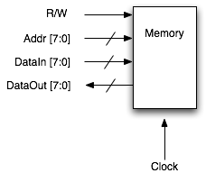

Copyright © 2005 Newisys, Inc. Licensed under the Open Software License version 2.0.
Product and company names mentioned herein may be trademarks of their respective owners.
Last updated 10/19/05
The purpose of this document is to help guide you through writing your first application using Jove. The example we'll be using in this document is that of a memory interface. The actual memory will be modeled in Verilog.
To begin, let's look at the memory interface:
On the positive edge of each clock, the memory examines the R/W signal. If it is logic high, the memory will drive the data at address Addr onto the data bus. If the R/W signal is logic low, the memory will latch the data on the bus and store it in the memory at address Addr. Thus we have the following:
|
 |
From this information, we create a Verilog test top that instantiates the DUT representing our memory. The test top is shown below.
module memctrl_test_top;
reg SystemClock;
wire[7:0] addr;
wire[7:0] datain;
wire[7:0] dataout;
wire rw;
wire clk;
assign clk = SystemClock;
initial begin
SystemClock = 0;
forever begin
#100 SystemClock = ~SystemClock;
end
end
memory dut(clk, rw, addr, datain, dataout);
endmodule
package com.newisys.tutorial.memctrl;
Next we'll specify a port for this interface. A port describes the members of an interface abstractly -- no signal widths are specified. The direction for each port is optional, but recommended as it provides some additional compile-time checking when accessing the signals in the testbench.
port MemctrlPort
{
input clk;
input rw;
input addr;
input datain;
output dataout;
}
Now we create an ifgen interface. The ifgen interface declares which Verilog signals will be used and how they will be sampled and driven. In the interface, signal directions are relative to the testbench. Thus, readwrite is declared as an output. Also note that the names of interface signals need not be identical to either the Verilog signal names with which they're associated or the port signals to which we'll eventually bind them.
This interface specifies default sample and drive specifications. This means that input and inout signals in this interface will be sampled on the positive edge of the clock with a skew of -1. Output and inout signals will be driven on the positive edge of the clock with a skew of 1.
interface MemctrlIntf
{
default sample(posedge, -1);
default drive(posedge, 1);
clock clk hdl_node memctrl_test_top.clk;
output readwrite hdl_node memctrl_test_top.rw;
output[7:0] address memctrl_test_top.addr;
input[7:0] datain hdl_node memctrl_test_top.dataout;
output[7:0] dataout hdl_node memctrl_test_top.datain;
}
Now that we've defined an interface and a port, we need to bind them together. To do this, we create a bind. Since all of the signals we're using in this bind exist in the MemctrlIntf interface, we declare it to be the default interface. The rest of the bind is just associating port signals (listed first) with interface signals (listed second).
bind MemctrlBind is MemctrlPort
{
default interface MemctrlIntf;
clk clk;
rw readwrite;
addr address;
datain datain;
dataout dataout;
}
Finally, we combine all of these elements in a testbench declaration. The import statement directs ifgen to take all of the binds, interfaces, etc. of this package into account when generating Java and Verilog code.
testbench MemctrlIfgenTB
{
import com.newisys.tutorial.memctrl.*;
}
Now that we have an ifgen specification, we use the jove-ifgen tool to parse it and generate Java classes we will use in our testbench and a Verilog shell file that we'll compile along with our other Verilog files. The rest of this document will assume the following directory structure:
jove-dist-1.0/
bin/
docs/
jove-tutorial/
bin/
src/
com/
newisys/
tutorial/
memctrl/
memctrl.if
To run jove-ifgen change directory to the jove-dist-1.0/jove-tutorial directory and run the following command:
../bin/jove-ifgen -srcroot gensrc -tstamp ifgen.tstamp -filelist ifgen.list -dir src -genshells
This will result in a directory named gensrc being created, which contains the generated Java and Verilog source code. Specifically, the following files will be generated:
| Filename | Description |
|---|---|
| gensrc/com/newisys/tutorial/memctrl/MemctrlPort.java | Contains a public Signal member for each port signal. Users will receive an instance of this type via the MemctrlBind.INSTANCE member. |
| gensrc/com/newisys/tutorial/memctrl/MemctrlIntf.java | Contains Signal members initialized to the respective Verilog signals. This class should not be referenced directly by user code. |
| gensrc/com/newisys/tutorial/memctrl/MemctrlBind.java | Contains a static member INSTANCE of type MemctrlPort. It is through this port object that the testbench should communicate with Verilog signals. |
| gensrc/com/newisys/tutorial/memctrl/MemctrlIfgenTB.java | In this example, this file is empty. If you had parameterized binds, this class would provide accessors for them based on the parameterization. |
| gensrc/com/newisys/tutorial/memctrl/memctrl_shell.v | This file contains some Verilog glue to allow Jove to communicate with the Verilog simulator. It should be compiled alongside any other Verilog source code used to create a simulation executable. |
It should be noted that jove-ifgen can also be run from an Ant task. An example of this is in the jove-tutorial/build.xml file.
Now that we've generated classes that let us drive and sample the Verilog signals of our DUT, it's time to actually write a test. We'll create a class named MemctrlTestcase the contains our test for the memory module. This class will extend com.newisys.dv.DVApplication. Indeed, the main class of every Jove application we write will extend DVApplication. When a class extends DVApplication, it is required to implement two methods:
Given this, our test case currently looks like the following:
package com.newisys.tutorial.memctrl;
import com.newisys.dv.DVApplication;
import com.newisys.dv.DVSimulation;
public class MemctrlTestcase extends DVApplication
{
public MemctrlTestcase(DVSimulation dvSim)
{
super(dvSim);
}
public void run()
{
// Testcase code will go here
}
}
Now let's add some meat to it. We're going to write the data 0x4E to location 0xDD in the memory and then read it back, checking that we read what we wrote. Note that the sample method returns a BitVector object. BitVectors allow 4-state values (0, 1, X, Z). They are sometimes required, but in many instances we can simply use int and long types and avoid the heavyweight BitVector objects.
public void run()
{
MemctrlPort bind = MemctrlBind.INSTANCE;
// write 0x4E to address 0xDD
bind.rw.drive(0); // drive R/W low to initiate a write
bind.addr.drive(0xDD); // write to address 0x77
bind.dataout.drive(0x4E); // write the value 0x4E
// advance to the next clock and write 0x22 to addr 0xDC
bind.clk.syncEdge(EdgeSet.POSEDGE);
bind.addr.drive(0xDC); // write to address 0xDC
bind.dataout.drive(0x22); // write the value 0x22
// advance to the next clock and read addr 0xDD
bind.clk.syncEdge(EdgeSet.POSEDGE);
bind.rw.drive(1); // drive R/W high to initiate a read
bind.addr.drive(0xDD); // read from address 0x77
// due to -1 skew, we wait two cycles before sampling dataout
bind.clk.syncEdge(EdgeSet.POSEDGE);
bind.clk.syncEdge(EdgeSet.POSEDGE);
final BitVector value = bind.datain.sample();
if (value.intValue() != 0x4E)
{
throw new AssertionError("Bad data. Expected: 8'h4e, Actual: "
+ value);
}
}
Finally, we need to create an instantiation of the shell in the Verilog test top file. This means adding a line like the following:
MemctrlIfgenTB vshell();
And that's all there is to it! Remember to compile the generated shell file along with the rest of your Verilog source. This full example is available in jove-dist-1.0/tutorial along with a makefile that supports the VCS and cver simulators.